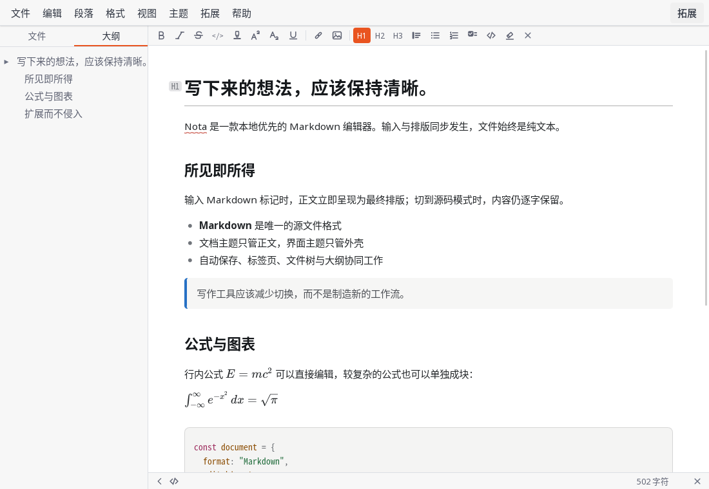
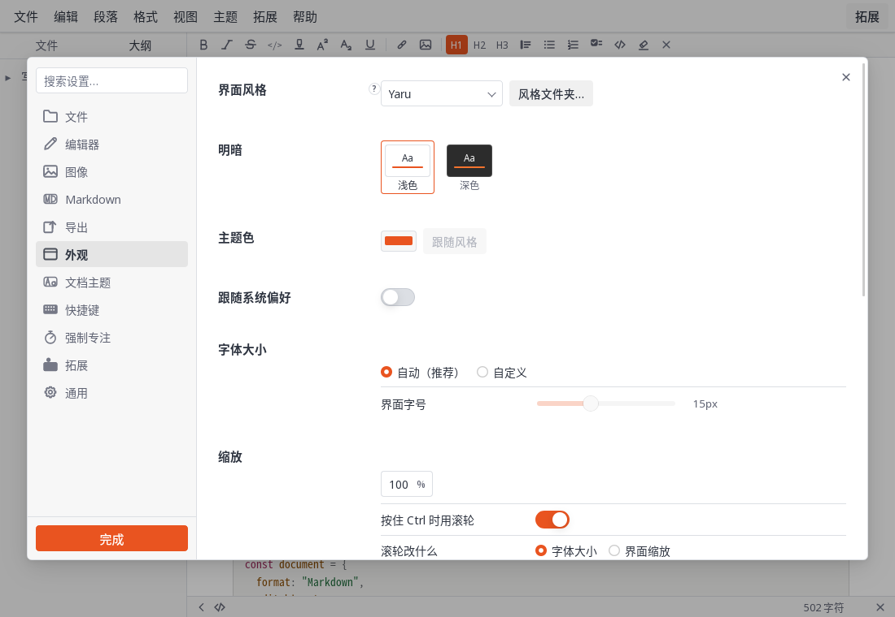
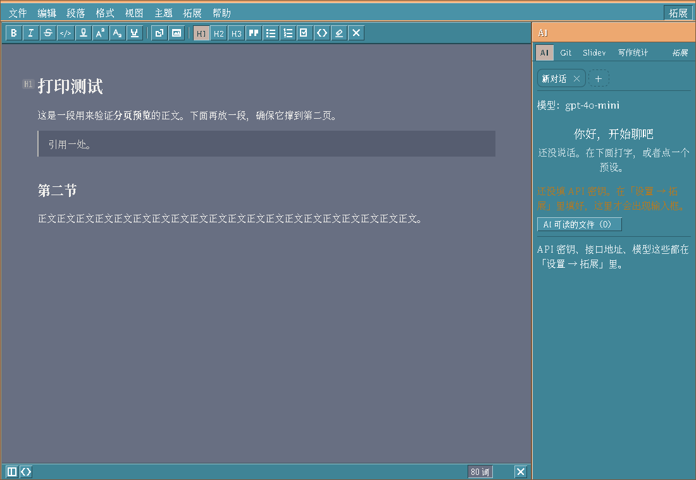

原位排版
标题、强调、列表、引用、代码、公式与图表都在输入位置直接呈现。
本地优先的 Markdown 编辑器
Nota 在输入位置直接呈现排版，同时把每一份笔记保存为普通、可移植的 Markdown。克制的写作界面、原生桌面安装包，以及按需安装的 Lua 拓展。
免费开源 · BSD-2-Clause · Linux、Windows 与 macOS

Markdown 应该在 Nota、别的编辑器，以及 Git diff 里都同样清楚。
把基础能力做好
标题、强调、列表、引用、代码、公式与图表都在输入位置直接呈现。
每份文档都是标准 Markdown。没有数据库，也没有私有文档层。
标签页、文件树、大纲、自动保存、外部修改检测与写作模式协同工作。
只安装需要的能力。官方 AI、Git、演示与统计拓展均独立发布。
界面外壳与正文分别控制。主题可以携带自己的 CSS、图标和字体。
Linux、Windows 与 macOS 安装包由同一套 Rust 和 React 代码构建。
界面主题与文档主题
Nota 把应用外壳与写作纸面分开。界面主题控制控件、间距、图标和字体； 文档主题只影响正文，不会泄漏到工作区。


默认保持精简
官方拓展独立安装。Lua 拓展只能获得清单中明确声明并获准的能力。
Nota 0.6.0 Beta
从 GitHub Releases 选择适合当前系统的安装包。